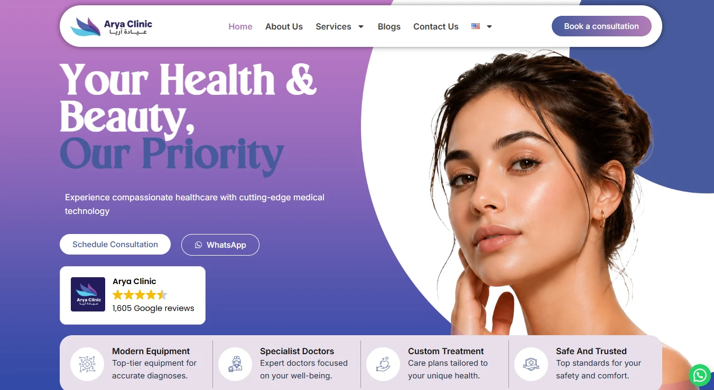
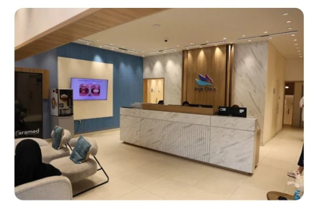
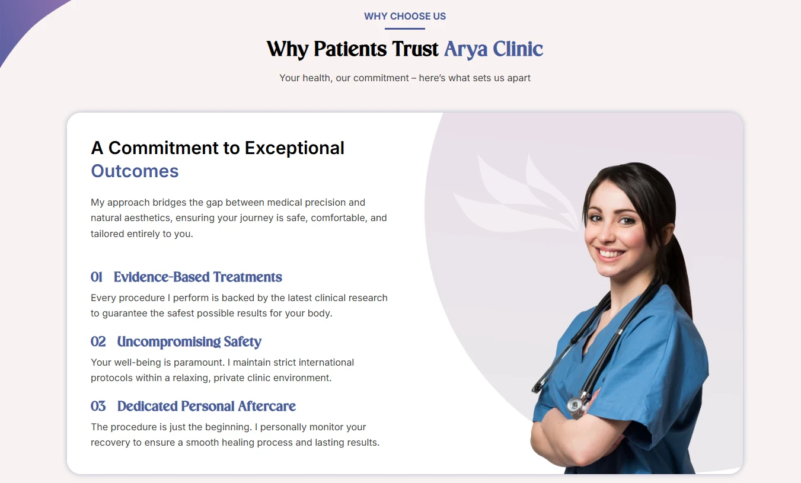
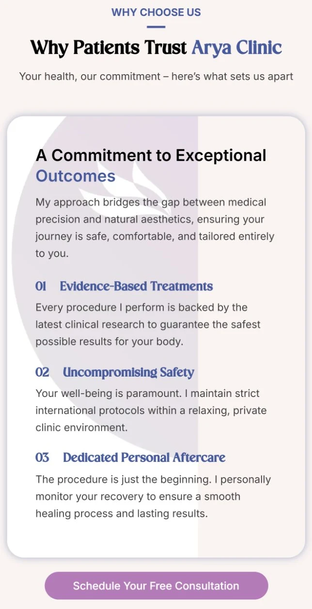
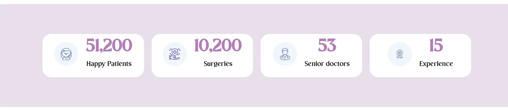

A clinic doing good work, behind a site that undersold it.
Arya's previous site was slow, had no way to book a consultation online, and looked unprofessional next to the clinic itself. It didn't put the clinic's real credibility — specialist doctors, patient volume, years of experience — anywhere a new visitor would actually see it, and it held up badly on mobile, which is where most first visits happen.
The brief wasn't "redesign a page." It was "give this clinic a site that looks as trustworthy as the clinic actually is, and let people book without calling."
Start from the clinic itself, not a template.
Before any screen, I looked at what Arya already had — its logo, its interior photography, and how it presented itself across social media — and pulled out the colors and marks that were already recognizably theirs, rather than inventing a new identity from scratch. From there I sketched the ideas and wireframed the full site in Figma, and reviewed it with the client before any of it was built, so the WordPress build that followed matched something already signed off.
Brand audit
Logo, interior photography, and social presence reviewed to lift the clinic's real colors and marks.
Figma first
Every screen designed and approved with the client before a single section went into Elementor.
Trust up front
Review rating, patient numbers, and specialist credentials placed above the fold, not buried in an About page.
One palette, one card shape, used everywhere.
A violet-to-blue gradient carries from the hero through the trust strip, and every value, stat, and treatment shares the same rounded card and circular icon badge — so a visitor scanning the page quickly reads it as one system, not a stack of separately designed sections. The same language from the digital brand needed to feel consistent with the real space patients walk into.

The palette and type system stayed deliberately small — two accent colors, one neutral scale, and a clear split between the display and body faces, so new sections stay consistent without a style guide to consult every time.
EN Heading
Erstoria
EN Body
Inter
AR Heading
El Messiri — المسيري
AR Body
Tajawal — تجوال
Built mobile-first, not resized down from desktop.
Most of Arya's traffic arrives on a phone, so the mobile layout wasn't a compressed version of the desktop one — cards restack, the trust strip drops to two columns instead of shrinking to unreadable text, and the booking actions stay exactly as reachable with a thumb as they are with a cursor.


Built in WordPress and Elementor Pro, content included.
I built this solo in WordPress and Elementor Pro, and took on the written content and imagery as part of the job rather than waiting on the client for it — not every photo was new; some came from the clinic's existing library and were cropped and retouched to sit consistently inside the new layout. Trust numbers, specialties, and treatments were all restructured into the same repeating card component, so adding a new treatment later is a duplicate-and-edit, not a redesign.

A few calls that came from the brief, not the template.
Looking back at it with a UX eye, three decisions do more work than they look like they do:
Proof before the pitch
The Google rating and review count sit inside the hero itself, not in a testimonials section six scrolls down. A first-time visitor sees social proof before they've read a single service description.
Two ways to act, everywhere
"Schedule Consultation" and WhatsApp sit side by side at every decision point, not just on a Contact page — so a visitor who'd rather message than fill a form is never a second-class path.
Photography over icons
Treatments use full-bleed photo cards with a gradient overlay instead of generic icon tiles — more emotionally legible for an aesthetic audience, where what the result looks like matters more than what the icon represents.
Online booking replaced "call us," and mobile stopped being an afterthought.
The old site's biggest gap was that booking meant picking up the phone. The rebuild put a consultation request directly on the page, repeated at the points a visitor is actually ready to act, and the whole layout was designed mobile-first rather than adapted down from a desktop version after the fact.
A faster, bookable, mobile-first clinic site.
Load time dropped from roughly 6 seconds to under 2, mobile bounce rate fell by about 35%, and online consultation requests — which didn't exist before — now make up close to a third of new bookings alongside phone and WhatsApp.